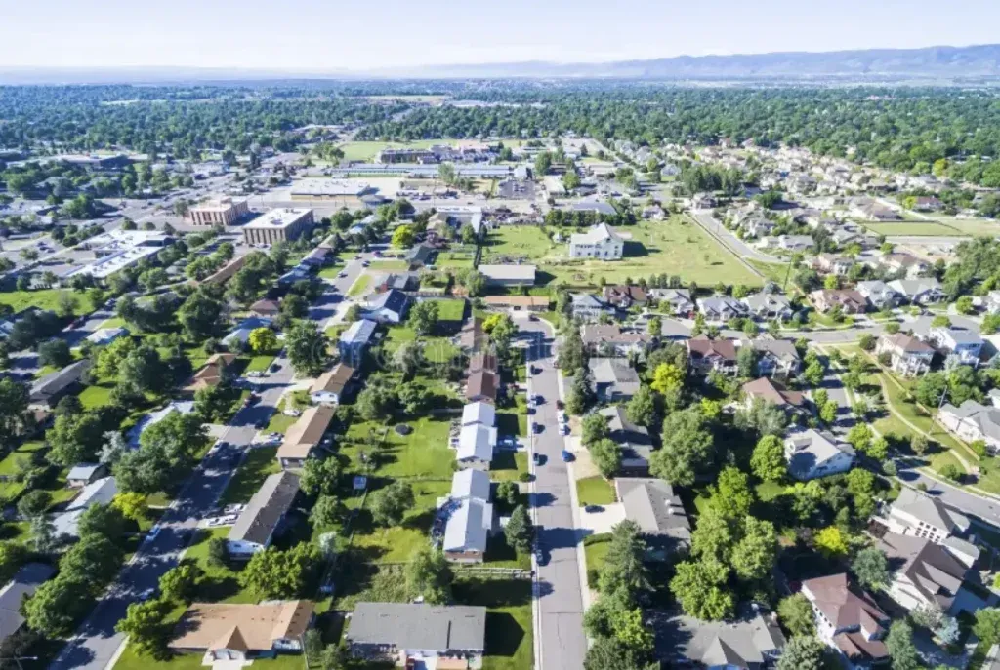
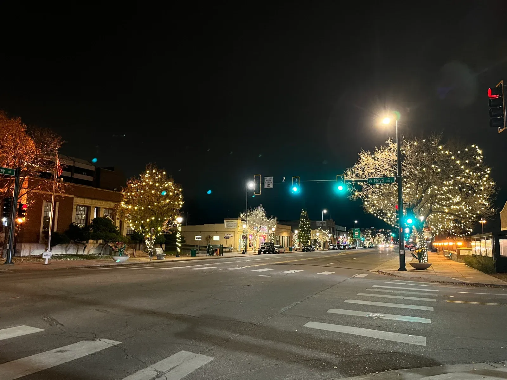
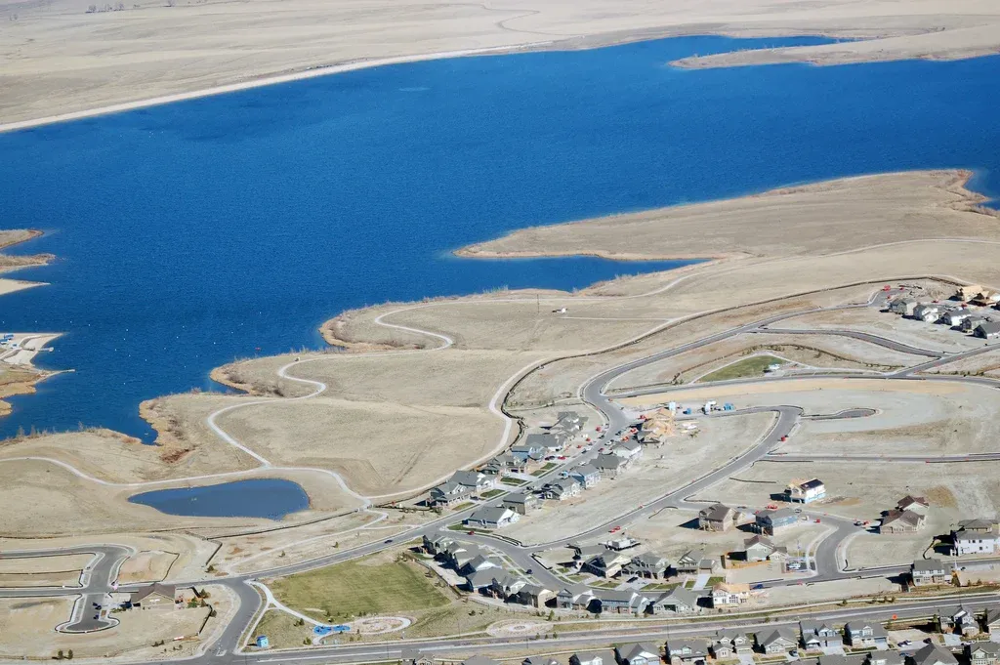
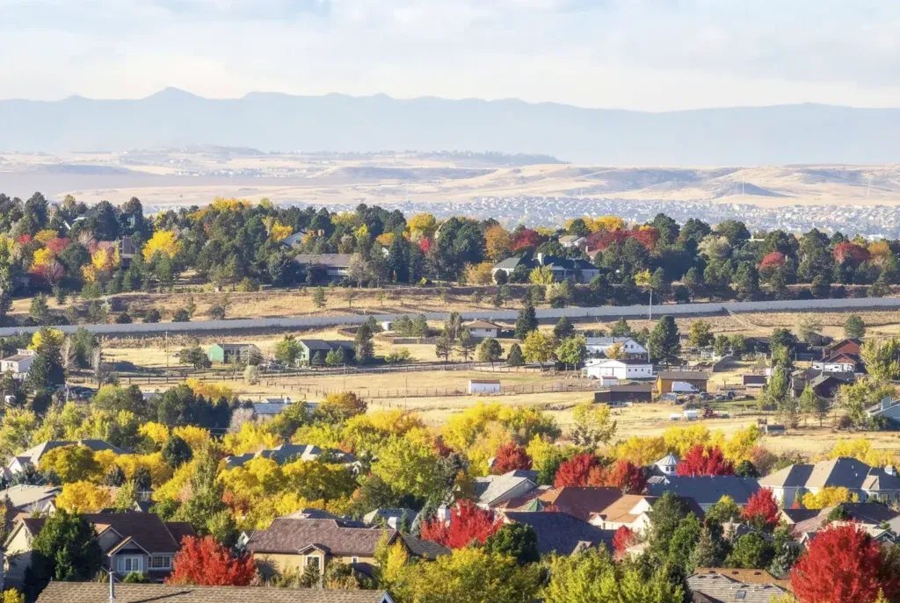
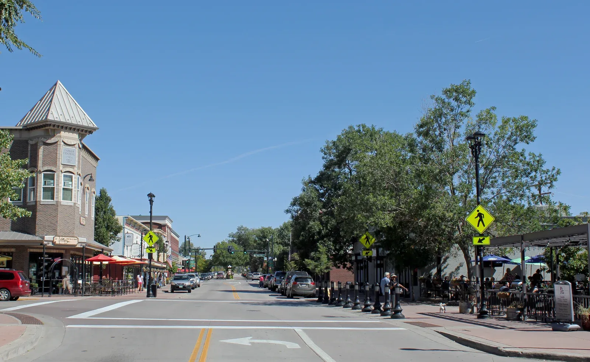
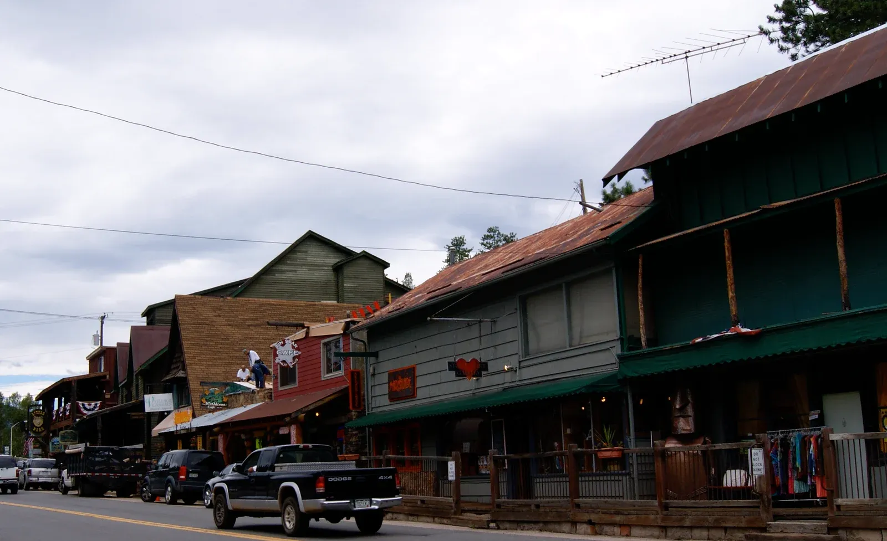

Find your community along the Front Range.
From city neighborhoods to foothills communities, explore the places you could call home.

18 communities
Denver ↗
Find your own version of city living.

Community guideLakewood ↗
City conveniences. A foothill perspective.
Littleton ↗
Historic streets meet a river-centered routine.
 Community guide
Community guideGolden ↗
A creekside downtown with foothill character.
 Community guide
Community guideArvada ↗
Olde Town energy. Room to explore.
 Community guide
Community guideWheat Ridge ↗
A greenbelt-first way to explore the west side.

Community guideEnglewood ↗
Public spaces, practical connections and a closer look.

Community guideAurora ↗
Build the search around your daily radius.

Community guideCentennial ↗
A closer look at parks, districts and daily life.
 Community guide
Community guideHighlands Ranch ↗
Understand the community behind the address.
 Community guide
Community guideWestminster ↗
Connect your home search to the routes you use.
 Community guide
Community guideBroomfield ↗
Regional connections, local routes, individual priorities.

Community guideParker ↗
A downtown visit, a trail outing, a practical search.
Castle Rock ↗
A landmark landscape with everyday questions.
Thornton ↗
Put the daily route at the center of the search.
 Community guide
Community guideNorthglenn ↗
Look closely at connections, not just proximity.
 Community guide
Community guideMorrison ↗
Explore the destination. Verify the address.

Community guideEvergreen ↗
A lake-centered introduction, an address-specific decision.
Use all 18 community guides to build a shortlist based on how you live, then verify the details at specific addresses. Compare transportation, outdoor access and housing tradeoffs, visit your strongest options at useful times, and score each against the same decision criteria before choosing where to look further.
Updated November 6, 2026Start with all 18 community guides
Begin with the complete set of 18 existing community guides, rather than narrowing the field to familiar names first. Read each guide once to identify places worth a closer look, then create a comparison sheet with the same fields for every candidate: daily routine, address checks, transportation, outdoor destinations, housing considerations and questions to investigate. This keeps early impressions from deciding the shortlist before you have compared your actual needs.
Make an initial longlist, then mark each community as a strong possibility, uncertain or unlikely, with a short reason. Treat those labels as working notes, not a ranking or a claim about overall quality. For every uncertainty, write a question you can answer through a visit, an address-specific check or a document request. Keep excluded options visible so you can revisit one if your priorities or verified information change.
Compare everyday routines, not just impressions
Write down the trips that shape an ordinary week: work or study, groceries, appointments, caregiving, exercise and social plans. For each community, consider the route, timing, frequency and flexibility involved. Separate essential trips from occasional ones, and note which routines require a car, another mode of travel or a workable alternative. This turns a broad preference such as “convenient” into a set of practical questions you can test.
Use a simple weekday and weekend schedule to compare candidates. Note which trips you would make from a particular home address, when you would make them and what backup plan you would use if your first choice were unavailable. Do not treat a guide’s general description as proof that a specific address fits your routine. Keep a record of what you checked and what still needs confirmation.
Verify the specific property and its obligations
If you enter a contract to buy a home in a homeowners association, Section 7 of the Colorado Contract to Buy and Sell (Residential) entitles you to the association documents listed there, including governing and financial documents. Colorado Division of Real Estate HOA buying guide Review them for dues, meeting minutes and possible special assessments; also investigate insurance, maintenance responsibilities and any homeowner coverage requirements. The Colorado Division of Real Estate says there is no regulatory oversight of HOAs in Colorado, making review of an association’s financial health important. Colorado Division of Real Estate HOA buying guide
For a home in a homeowners association, ask for the association documents available through Section 7 of the Colorado residential purchase contract and review governing and financial records. Look for dues, meeting minutes and indications of possible special assessments; also ask about insurance, maintenance responsibilities and any homeowner coverage requirements. The Colorado Division of Real Estate identifies these as important due-diligence topics and notes that HOA financial oversight is limited. Colorado Division of Real Estate HOA buying guide
Test transportation for your real schedule
Compare transportation from the address you might buy, not from a community’s center or a convenient map pin. List the destinations you need to reach and test your likely departure times, return times and frequency. If you expect to walk, cycle, drive or use public transportation, assess each option separately and note transfers, access points, parking needs or other practical constraints that affect your own trip.
Repeat the comparison for a routine weekday and a less predictable day, such as one involving an appointment or an evening commitment. Ask what happens when weather, timing or a missed connection changes the plan. Record your own observations and check current route details with the relevant transportation provider. Treat estimated travel times as a snapshot to verify, not a guarantee of your future commute.
Check outdoor destinations and the trip to reach them
List the outdoor activities you genuinely expect to do, then identify destinations that could support them. Consider the whole outing: getting there, access points, parking or transit, time required and whether the destination fits a quick visit or needs more planning. Compare communities using your own priorities, such as a regular walk, a longer excursion or access to a particular type of outdoor setting, rather than a general label like “outdoorsy.”
For each candidate, verify the destination and route independently, and note any conditions you need to check before going. If you are considering a property near wildland vegetation, assess wildfire preparation separately from recreation: the Colorado State Forest Service recommends reducing nearby fuels and maintaining the home ignition zone, while emphasizing that mitigation improves odds but cannot guarantee a home will survive. Colorado State Forest Service wildfire guidance
Separate home preferences from required checks
Decide which housing features are preferences and which are non-negotiable needs. Compare the type of home, space, upkeep, outdoor area and community rules against your actual routine. If an HOA is involved, review its covenants and policies for restrictions that could affect how you use the property, and examine its maintenance practices, budget and meeting records. Association costs can include special assessments and other expenses beyond regular dues, according to the Colorado Division of Real Estate. Colorado Division of Real Estate HOA buying guide
Keep these preference comparisons separate from inspections, required disclosures and document review. Colorado’s health department provides information on radon and real estate transactions, including a brochure identified as required for real estate transactions and rental agreements. Ask the appropriate real estate professional what materials apply to your transaction, and consult qualified inspectors for property conditions. Colorado Department of Public Health and Environment radon information
Scout, record and make the decision
Visit your strongest candidates with a short checklist and a consistent plan. If possible, see each area at times that reflect your typical schedule, and travel the routes you would actually use. Note what you can observe directly, what you learned from a source and what remains uncertain. For a prospective home, inspect the immediate surroundings and ask focused questions about HOA documents, property responsibilities or other address-specific issues rather than relying on a general community impression.
Finish with a decision matrix. Give each criterion a weight based on importance, then score every candidate using the same scale and evidence standard. Include routine fit, address checks, transportation, outdoor access, housing tradeoffs and unresolved questions. Do not let a strong score conceal a critical unknown: flag missing documents or checks for follow-up. The result is a reasoned shortlist for further investigation, not a guarantee about a property or future conditions.
Questions & answers.
How should I use all 18 community guides?
Review every guide with the same comparison fields, then keep a longlist before narrowing it. Use each guide to generate questions and candidates, not to assume that a broad description applies to a specific property. Record why you keep or remove each option, and revisit uncertain choices after address checks or scouting visits.
When should I switch from community research to address checks?
Move to address-level research as soon as a community appears to fit your routines and priorities. A community-level impression cannot answer questions about a particular home’s setting, access, association obligations or condition. Verify the actual address and request relevant records before treating the option as a serious finalist.
What should I review when a home is in an HOA?
After entering a purchase contract, review the governing and financial association documents listed in Section 7 of the Colorado Contract to Buy and Sell (Residential); the buyer is entitled to those documents. Colorado Division of Real Estate HOA buying guide Review rules, budgets and recent meeting minutes, and investigate dues, possible assessments, insurance and maintenance responsibilities. The Colorado Division of Real Estate says there is no regulatory oversight of HOAs in Colorado. Colorado Division of Real Estate HOA buying guide
Does a community guide replace property inspections or required documents?
No. Use guides to compare places and identify questions, but arrange appropriate property inspections and review transaction materials separately. Colorado’s radon resource identifies a brochure required for real estate transactions and rental agreements; ask your real estate professional which materials apply to your situation. Colorado Department of Public Health and Environment radon information